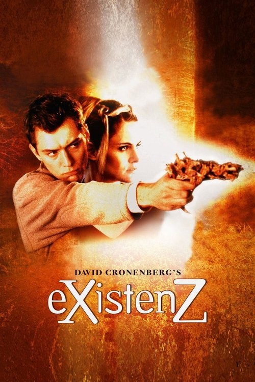

eXistenZ (1999)
Sinopsis Rápida
En un futuro cercano, la realidad se desdibuja entre lo orgánico y lo digital. ¿Qué pasaría si los videojuegos pudieran traspasar los límites de la mente y el cuerpo?
Sinopsis Detallada
eXistenZ nos sumerge en un mundo donde los juegos de realidad virtual se juegan mediante una grotesca interfaz biológica. Allegra Geller, diseñadora de juegos, es perseguida por una misteriosa organización que busca destruir su último y revolucionario juego. La línea entre la realidad y la simulación se difumina constantemente, generando una experiencia profundamente perturbadora y filosófica. La película explora temas de identidad, realidad y la naturaleza de la tecnología, dejando al espectador cuestionando su propia percepción de la realidad.
¿Por qué tenés que verla?
- Una experiencia cinematográfica única e inquietante que te dejará pensando mucho después de los créditos.
- La dirección magistral de David Cronenberg crea una atmósfera de tensión constante y una estética visualmente impactante.
- eXistenZ anticipó muchos de los temas y preocupaciones sobre la realidad virtual y la tecnología que se exploran hoy en día.
- La película presenta una crítica social a la dependencia tecnológica y la manipulación mediática.
Idea Extra
Análisis del simbolismo en eXistenZ: Una exploración de las imágenes perturbadoras y su significado en el contexto de la realidad simulada.